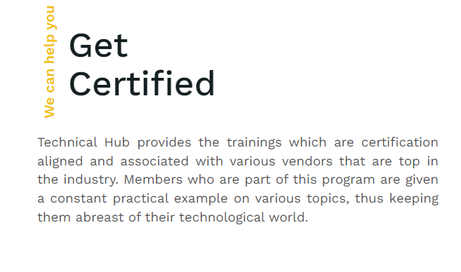

Courses
Technical hub provides various courses training.We have a wide range of placements and the courses we provide are :
- different technologies
- different computer languages
- placement trainings
Get Certificate
Technical hub provides various certifications from well known companies like cisco,pearson etc.We provide different technology certifications also.

Technical Certifications